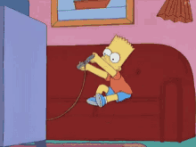
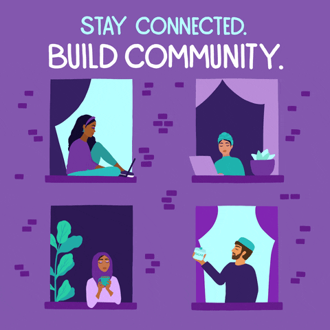

Hobbies
Video Games
Video games is what I do to destress after a long day. It's only right that I mention it because its been such a large part of my life. The ability to play with your friends and escape reality for a couple of hours is what has allowed me to be mentally prepared everyday.
One of my favorite games right now is called Apex Legends. It is a battle royale game that encourages strategy, teamwork, and communication. It has allowed me to practice my communication and team skills while doing something I enjoy.
On that note here is the YouTube channel that me and my friend record and post our videos on!
Sports

I am no athlete, but playing sports is my preferred way to stay physically active. I love to play basketball because I believe that, at its core, it is an art. It is a multi-dimensional sport that has taught me a lot off the court. A lot of my strengths as a team player come form spending so much time playing basketball. It has also taught me about how to find the beauty in the chaos similar to how an NBA player has to pick and choose when to dribble, pass, or shoot.
In my house a lot of NFL and NBA is watched, so of course I have favorite teams. GO BEARS AND GO LAKERS!
Helping at my local mosque
My favorite hobby is volunteering at my local mosque on Fridays. In Islam, Friday is an important day, and the community gathers around noon to go to the mosque and pray. I take the time to go early and help with stuff like managing the parking lot, providing help to the elderly, and navigating people. I am very grateful for being able to do this because I like to getting closer to the community and bringing the community closer to itself. Being a positive influence to your community is a step closer to positively influencing the world. I hope I get to that point one day.